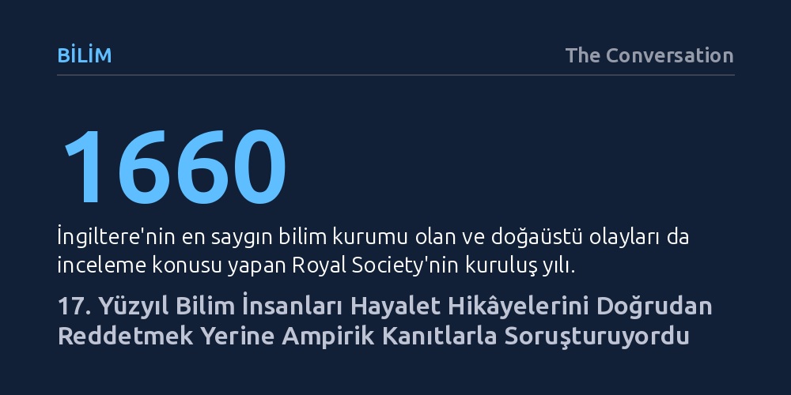

BILIM · The Conversation · 2026-10-20
17. yüzyılda Royal Society üyesi doğa bilimcileri, hayalet ve büyücülük anlatılarını peşinen reddetmek yerine tanık güvenilirliğini ve fiziksel kanıtları tartarak ampirik yöntemle inceledi. Bu titiz vaka kayıtları, dönemin bilimsel ufkunda doğaüstü olayların da gözlemsel kanıtlara dayandırılmaya çalışıldığını gösteriyor.
Bilimsel yöntemin doğuşunda doğaüstü olayların kör bir inançla savunulmadığını, aksine modern ampirizmin ilk adımlarının hurafeleri bile titiz gözlem ve kanıt süzgecinden geçirerek atıldığını hatırlatır.

1671 yılı civarında İngiltere'nin güneybatısındaki Wiltshire bölgesinde görev yapan Rahip Symonds, gece geç saatte atıyla evine dönerken arkasına aniden bir silüet bindi. Papaz evine varana kadar onunla yan yana ilerleyen bu hayalet, kapıya gelindiğinde attan indi ve papaza dönüp dik dik baktı. Rahip, karşılaştığı silüetin yaklaşık iki yıl önce hayatını kaybetmiş bir asilzade olan John Estcourt olduğunu teşhis etti.
Günümüzde Cadılar Bayramı folklorunun veya hayal ürünlerinin parçası sayılan bu tür anlatılar, 17. yüzyılın ikinci yarısında İngiliz bilim dünyasının en ciddi araştırma konularından biriydi. 1660'ta kurulan ülkenin öncü bilim akademisi Royal Society üyeleri, cadıların ve hayaletlerin gerçekten var olup olmadığını ve bu varoluşun ampirik yöntemlerle nasıl kanıtlanabileceğini tartışıyordu. Joseph Glanvill gibi cemiyet üyeleri, doğaüstü vakaları ayrıntılarıyla derleyerek ruhların varlığını ispatlamanın Tanrı'nın varlığını savunmakla eşdeğer olduğunu öne sürüyordu.
Rahip Symonds'ın başından geçenleri kayda geçiren kişi, yine Royal Society üyesi olan araştırmacı John Aubrey'ydi. Aubrey, 1656 yılında kaleme almaya başladığı ve İngiltere'nin ilk ilçe ölçekli doğa araştırması sayılan Wiltshire Doğa Tarihi çalışmasında bu olaya yer verdi. Aubrey, doğaüstü vakaların ciddiyetle incelenmesi gerektiği konusunda Glanvill'e hak veriyor, ancak onun her anlatıya kolayca inanan saf yaklaşımını eleştiriyordu. Royal Society, çalışmanın bilimsel değerini teslim ederek 1691 yılında eserin bir kopyasını kendi kütüphanesine dahil etti.
Aubrey'nin benimsediği yöntem, dönemin doğa tarihi anlayışıyla bütünüyle uyumluydu: Yeni bilimsel kuramlar inşa edebilmek için önce her türlü olguyu ve gözlemi önyargısızca toplamak gerekiyordu. Metninde ejderha efsanelerinden devlere kadar pek çok sıra dışı iddiaya yer verse de sahtekarlıkları titizlikle ayıkladı; örneğin bedenine iğneler batırılmasına dayanarak büyülenmiş taklidi yapan Katherine Waldron'ın hilesini ifşa etti. Aubrey kendi şüpheci tutumunu özetlerken, “where one is true, a hundred are figments” (biri gerçekse, yüzü hayal ürünüdür) diyerek anlatıların ezici çoğunluğunun kurmaca olduğunu açıkça vurguladı.
Aubrey, Rahip Symonds'ın hikâyesini incelerken ne körü körüne inandı ne de anlatıyı peşinen bir kenara itti. Papazın güçlü kuvvetli bir adam olduğunu, asılsız kuruntulara ya da histerik sanrılara kapılacak bir yapıda olmadığını belirtti; din adamı kimliği de ifadesinin güvenilirliğini artırıyordu. Buna karşın şüpheciliği elden bırakmayan Aubrey, sarhoşların şeytan gördüğüne dair Fransız atasözünü hatırlatarak papazın alkollü olabileceği ihtimalini de göz önünde bulundurdu.
Ancak araştırmacıyı asıl düşündüren detay, olayın insan dışındaki tanığı olan attı. Eve ulaştığında korkudan tir tir titreyen, kan ter içinde kalan ve ertesi gün dahi korkusundan yulafını yemeyen bir at vardı. Bir at yalan söyleyemez, sarhoş olamaz ya da dini hezeyanlar üretemezdi; dolayısıyla sergilediği dehşet fiziksel olarak sahiciydi. Aubrey, atın bu somut tepkisini anlatının ciddiye alınması gereken en güçlü dolaylı kanıtı olarak gördü.
Aubrey'nin kaydettiği bir diğer gece yolculuğu ise doğaüstü korkuların ampirik testle nasıl boşa çıktığını gösterir. Sir Ralph Bankes'ın uşağı, Dorset kırsalında at sürerken karanlıkta yaklaştıkça büyüyen kara bir silüet fark etti. Korkudan saçları diken diken olsa da "kaybedecek tek bir canım var, gidip ruh mu değil mi göreceğim" diyerek atını doğrudan hayaletin üzerine sürdü. Yanına vardığında, devasa hayaletin yol kenarına yığılmış bir at pisliği tepeciğinden ibaret olduğunu anladı.
Bu iki zıt vaka, 17. yüzyıl biliminin sınırlarını ve araştırma refleksini özetler. Papazın karşılaştığı silüet doğrudan test edilemediği için tanıkların güvenilirliği ve yan fiziksel kanıtlar tartılmış; uşağın vakasında ise tanık bizzat olayın üzerine giderek yanılsamayı anında çürütmüştü. Aubrey'nin hem doğa olaylarına hem de hayalet anlatılarına uyguladığı bu dikkatli veri toplama, kanıtları tartma ve peşin hükümlerden kaçınma disiplini, modern ampirizmin ilk dönemlerindeki entelektüel dürüstlüğünü ortaya koyuyor.